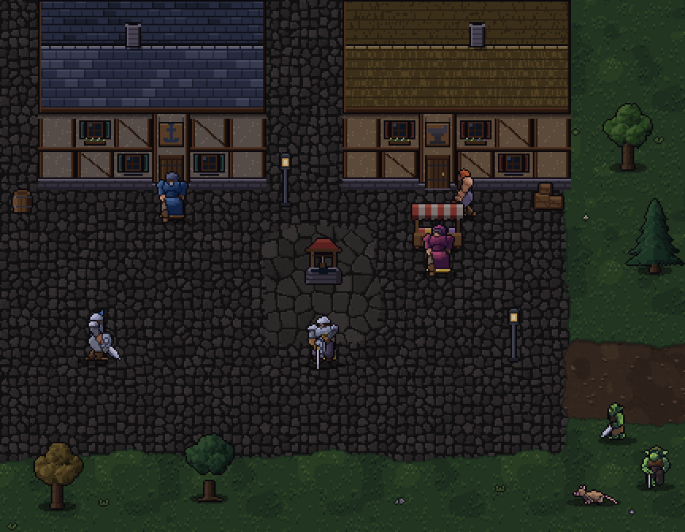
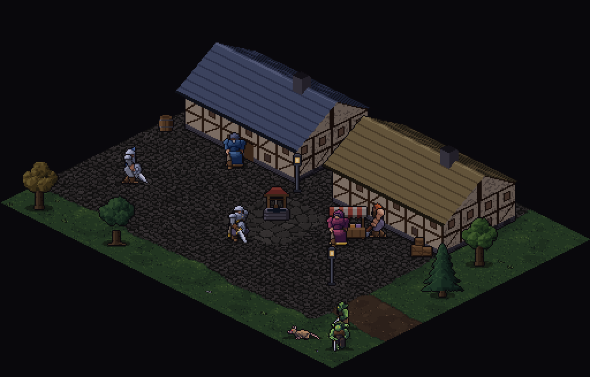

Derselbe Ausschnitt einer Stadt mit Held, vier NPCs, zwei Goblins und einer Ratte am Rand, gleicher Pixelmaßstab 2, gleiche Figuren und Böden aus dem Spielcode. Links die jetzige Draufsicht, rechts die schräge Iso-Ansicht 2:1 (Rautenkacheln 64×32, zwei Hauswände und Satteldach sichtbar). Das Spiel selbst ist unverändert. Neu backen: npx tsx scripts/bake-iso-probe.ts.
Jetzt: Draufsicht

Probe: Iso 2:1

Was man sieht
Iso: Häuser wirken wie Gebäude mit Tiefe (Vorder- und Seitenwand, Dach, Giebel). Der Platz liegt als Raute, Wege laufen schräg. Mehr Raumgefühl, näher am Look alter Online-RPGs.
Draufsicht: mehr Fläche sichtbar, alles achsenparallel und gut lesbar, die Häuser zeigen nur Dach und Vorderwand.
Der Boden in der Iso-Probe ist nur umprojiziert (Pflaster wirkt kleiner und weicher). Bei einem echten Umbau würde er für Rauten neu gezeichnet.
Der Held steht in der Iso-Probe in einer 45°-Schrägansicht, die das Figuren-Skelett ohne neue Kunst hergibt (siehe unten). NPCs und Monster zeigen hier noch die alten Ansichten (vorn/seitlich).
Held: Seite, vorn, hinten, dann schräg vorn und schräg hinten (45°)